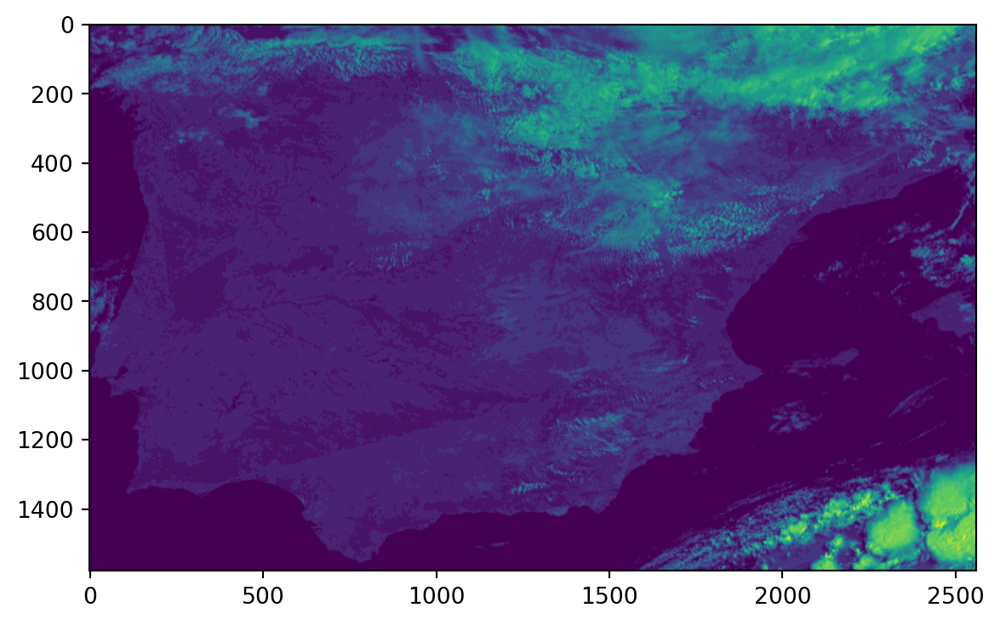

import numpy as np
from osgeo import gdal
from osgeo import osr
import os
import pyresample as pr
from satpy import Scene
import matplotlib.pyplot as pltTranslating EUMETSAT’s .nat files to GTiff
2020-05-10 10:00
In this tutorial, I am using Python to translate a Meteosat Second Generation (MSG) Native Archive Format (.nat) file to GTiff. Conveniently, there exists a driver support for these files in both, the gdal and the satpy library. Here, we are going to use satpy because we also want to resample the data with its “associated” library pyresample. First, we will load all the libraries we are going to need into our Python session.
As opposed to BUFR files, reading .nat files is quite straightforward. All we need to do is handing the right reader to the satpy Scene function. We can then take a look at the available datasets.
file = "MSG1-SEVI-MSG15-0100-NA-20160531090417.660000000Z-20160531090437-1405098.nat"
# define reader
reader = "seviri_l1b_native"
# read the file
scn = Scene(filenames = {reader:[file]})
# extract data set names
dataset_names = scn.all_dataset_names()
# print available datasets
print('\n'.join(map(str, dataset_names)))HRV
IR_016
IR_039
IR_087
IR_097
IR_108
IR_120
IR_134
VIS006
VIS008
WV_062
WV_073The MSG data is provided as Full Disk, meaning that roughly the complete North-South extent of the globe from the Atlantic to the Indian Ocean is present in each file. For most applications and research questions, it is not necessary to process an extent that large. This is why as an example, we are going to resample the data to the extent of Spain. For this, we are using functionality from the pyresample library, which allows users to create customized area definitions.
# create some information on the reference system
area_id = "Spain"
description = "Geographical Coordinate System clipped on Spain"
proj_id = "Spain"
# specifing some parameters of the projection
proj_dict = {"proj": "longlat", "ellps": "WGS84", "datum": "WGS84"}
# calculate the width and height of the aoi in pixels
llx = -9.5 # lower left x coordinate in degrees
lly = 35.9 # lower left y coordinate in degrees
urx = 3.3 # upper right x coordinate in degrees
ury = 43.8 # upper right y coordinate in degrees
resolution = 0.005 # target resolution in degrees
# calculating the number of pixels
width = int((urx - llx) / resolution)
height = int((ury - lly) / resolution)
area_extent = (llx,lly,urx,ury)
# defining the area
area_def = pr.geometry.AreaDefinition(area_id, proj_id, description, proj_dict, width, height, area_extent)
print(area_def)Area ID: Spain
Description: Spain
Projection ID: Geographical Coordinate System clipped on Spain
Projection: {'datum': 'WGS84', 'no_defs': 'None', 'proj': 'longlat', 'type': 'crs'}
Number of columns: 2560
Number of rows: 1579
Area extent: (-9.5, 35.9, 3.3, 43.8)/home/darius/Desktop/website/new/py-env/lib/python3.10/site-packages/pyproj/crs/crs.py:1282: UserWarning: You will likely lose important projection information when converting to a PROJ string from another format. See: https://proj.org/faq.html#what-is-the-best-format-for-describing-coordinate-reference-systems
proj = self._crs.to_proj4(version=version)We will show here how to proceed when we want to extract more than one specific data set. We can either apply a for loop over the desired datasets we need or write a general function that can extract the data for any specified variable. Here we are going forward with the latter approach because a function is more reusable than a simple script.
def nat2tif(file, calibration, area_def, dataset, reader, outdir, label, dtype, radius, epsilon, nodata):
# open the file
scn = Scene(filenames = {reader: [file]})
# let us check that the specified data set is actually available
scn_names = scn.all_dataset_names()
# raise exception if dataset is not present in available names
if dataset not in scn_names:
raise Exception("Specified dataset is not available.")
# we need to load the data, different calibration can be chosen
scn.load([dataset], calibration=calibration)
# let us extract the longitude and latitude data
lons, lats = scn[dataset].area.get_lonlats()
# now we can apply a swath definition for our output raster
swath_def = pr.geometry.SwathDefinition(lons=lons, lats=lats)
# and finally we also extract the data
values = scn[dataset].values
# we will now change the datatype of the arrays
# depending on the present data this can be changed
lons = lons.astype(dtype)
lats = lats.astype(dtype)
values = values.astype(dtype)
# now we can already resample our data to the area of interest
values = pr.kd_tree.resample_nearest(swath_def, values,
area_def,
radius_of_influence=radius, # in meters
epsilon=epsilon,
fill_value=False)
# we are going to check if the outdir exists and create it if it doesnt
if not os.path.exists(outdir):
os.makedirs(outdir)
# let us join our filename based on the input file's basename
outname = os.path.join(outdir, os.path.basename(file)[:-4] + "_" + str(label) + ".tif")
# now we define some metadata for our raster file
cols = values.shape[1]
rows = values.shape[0]
pixelWidth = (area_def.area_extent[2] - area_def.area_extent[0]) / cols
pixelHeight = (area_def.area_extent[1] - area_def.area_extent[3]) / rows
originX = area_def.area_extent[0]
originY = area_def.area_extent[3]
# here we actually create the file
driver = gdal.GetDriverByName("GTiff")
outRaster = driver.Create(outname, cols, rows, 1)
# writing the metadata
outRaster.SetGeoTransform((originX, pixelWidth, 0, originY, 0, pixelHeight))
# creating a new band and writting the data
outband = outRaster.GetRasterBand(1)
outband.SetNoDataValue(nodata) #specified no data value by user
outband.WriteArray(np.array(values)) # writting the values
outRasterSRS = osr.SpatialReference() # create CRS instance
outRasterSRS.ImportFromEPSG(4326) # get info for EPSG 4326
outRaster.SetProjection(outRasterSRS.ExportToWkt()) # set CRS as WKT
# clean up
outband.FlushCache()
outband = None
outRaster = NoneNow we can apply this function to our input file and extract any available dataset. Note that some of the input variables need further explanation. The very first option which might not be self-evident is calibration. With this option we can tell satpy to pre-calibrate the data, for example, to reflectance in contrast to radiances. The option label appends the value of label to the ouput filename. With the dtype option, we can specifically choose which datatype is used for the output file. Accordingly, we should adopt the value for nodata, which flags no data values in the output file. The options radius and epsilon are options of the nearest neighbor resampling routine and can be specified to the user needs (see here for more information).
nat2tif(file = file,
calibration = "radiance",
area_def = area_def,
dataset = "HRV",
reader = reader,
outdir = "./output",
label = "HRV",
dtype = "float32",
radius = 16000,
epsilon = .5,
nodata = -3.4E+38)Now we can read in the newly created file and take a look at a simple plot to visualize our result (Note that in the background, I am using R to generate this plot quickly).
file = "output/MSG1-SEVI-MSG15-0100-NA-20160531090417.660000000Z-20160531090437-1405098_HRV.tif"
ds = gdal.Open(file)
band = ds.GetRasterBand(1)
data = band.ReadAsArray()
plt.imshow(data)<matplotlib.image.AxesImage at 0x7f54fa1e1c90>